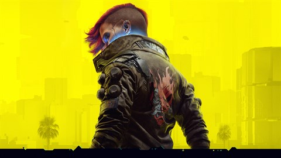

Anões, Espaço e Cerveja?
postado 29 de fevereiro 2024
Se é isso que você procura, eu tenho a solução para seus problemas, o jogo Deep Rock Galatic, é é um jogo de tiro em primeira pessoa de ficção científica cooperativo bem similar a titúlos como L4D. No DRG você é um anão minerador que precisa coletar recursos para a compania, para isto o jogador é enviado em algum planeta para realizar uma missão, o que o torna interessante é as configurações de equipamento, que acabam permitindo uma gameplay mais variada, e acaba sendo um dos melhores cooperativo entre os concorrente, afinal este recompensa o jogador, por cada companheiro que saiu com vida, fazendo com que o jogador não deixe ninguém para trás.
Leia maisUm futuro bem distópico
postado 02 de junho 2024 Cyberpunk 2077, se passa em 2077, duh, que conta a história do personagem V, que é controlado pelo protagonista, ele se passa num mundo futurista, extremamente regrado por grandes corporações e o próprio consumismo, ele é bastante inspirado no mundo criado por Willian Gibson em seu livro "Neuromancer" que já serviu de inspiração para diversas mídias, o seu início foi meio turbolento, tendo muitos problemas de otimização, apresentava muitos bugs, e não veio com tudo que tinha prometido, porém, após a vinda da série animada do universo, eles corrigiram uma boa parte dos erros de otimização, os bugs diminuiram um pouco, e parece um pouco mais com o que foi prometido, eles deram um overhaul em várias partes do jogo, uma delas é a árvore de habilidades, permitindo uma gameplay um pouco mais variada.
Leia mais